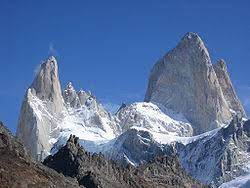

Andy
Najwyższym szczytem And jest Aconcagua:
Najwyższy szczyt Andów, Ameryki Południowej oraz całej Ameryki o wysokości 6960,8 m n.p.m. Leży w Andach Południowych, w Kordylierze Głównej, na obszarze Argentyny, nieco ponad 110 km na północny zachód od miasta Mendoza.
Drugim najwyższym szczytem And jest Cerro Bonete:
To góra w północnej części prowincji z La Rioja , Argentyna , w pobliżu granicy z prowincji Catamarca . Jego szczyt znajduje się na wysokości 6 759 m npm , co czyni go piątą najwyższą oddzielną górą w obu Amerykach (po Aconcagua , Ojos del Salado , Monte Pissis i Huascaran ). Dane SRTM przeczą często podnoszonemu twierdzeniu, że jego szczyt znajduje się na wysokości 6872 m npm